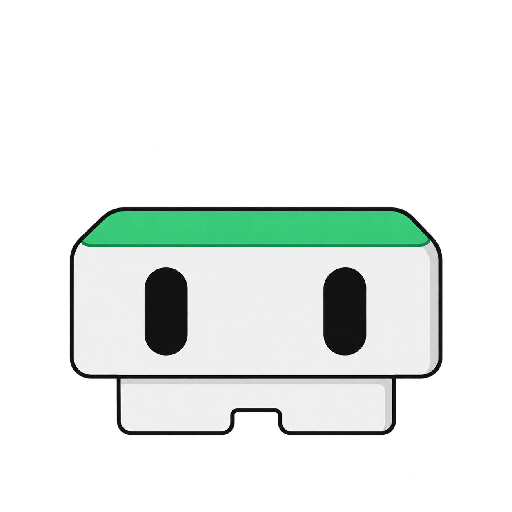
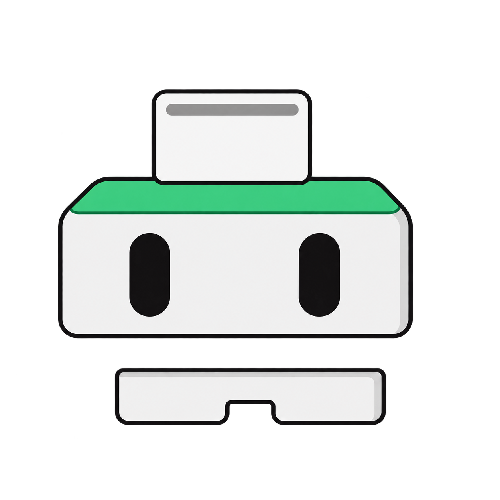
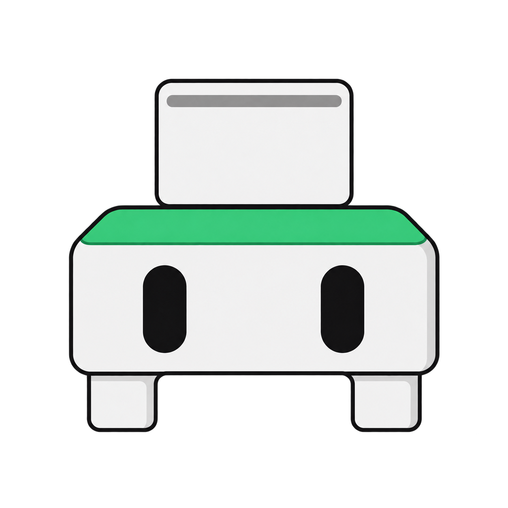
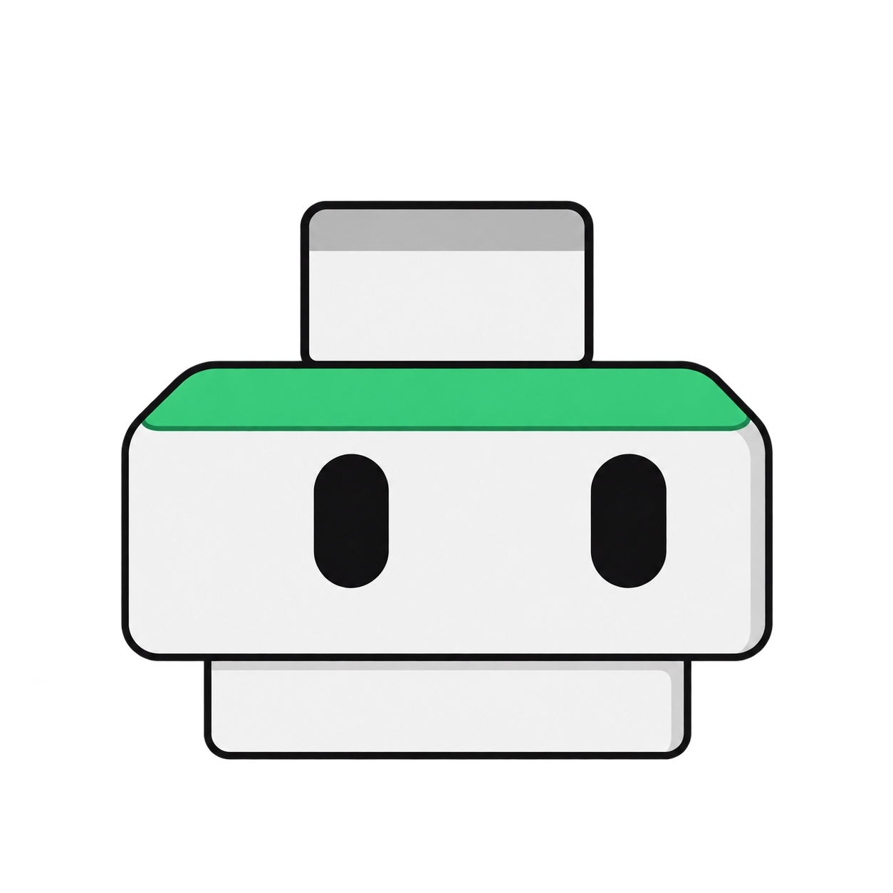
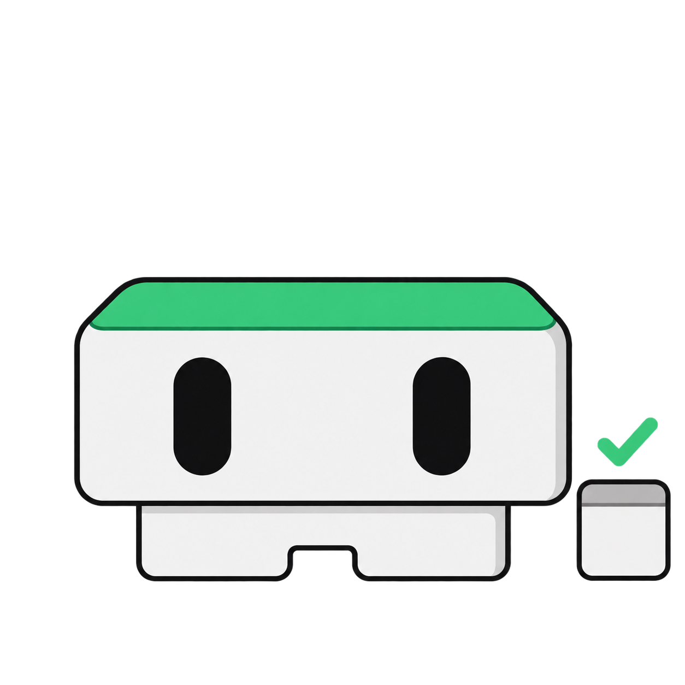
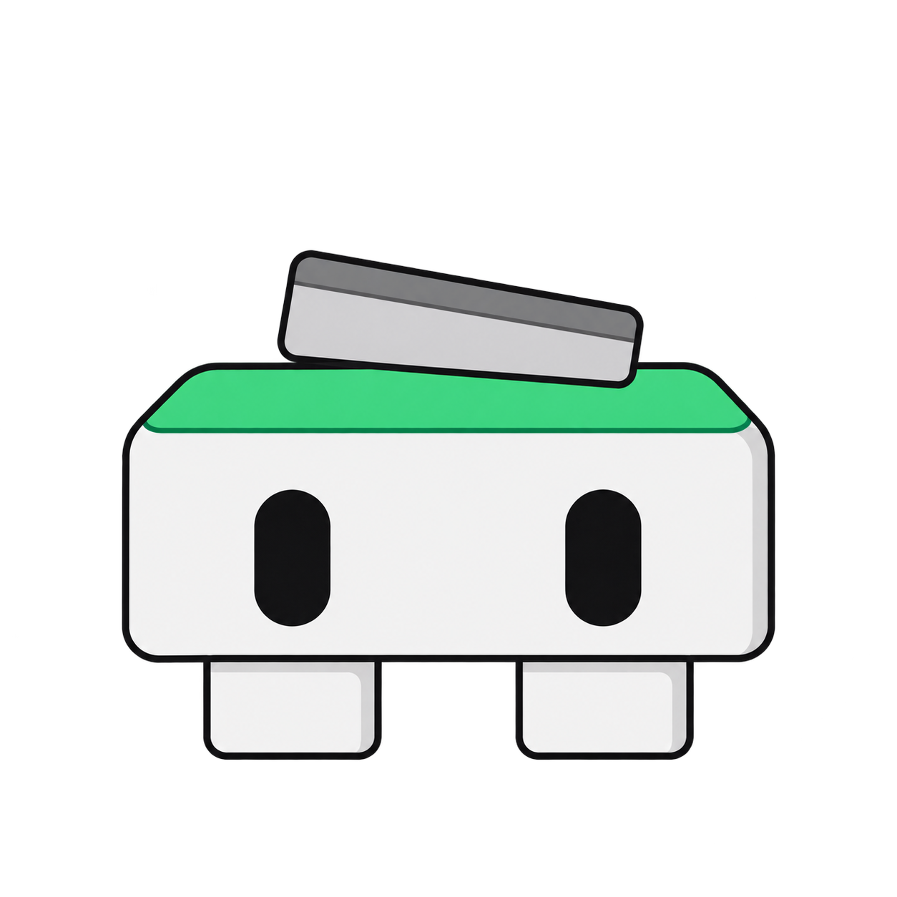

Idle
Ready for a move
One character · Six activities
Family study / v1
A careful mover. A shape for every step.
Ply, Span and Plinth become one creature. The same pale face, two dark eyes and green top edge; its body changes with the work.
144 px views · Actual-size samples beneath each pose

Ready for a move

Drop accepted

Move in flight

Mission Control running

Placement confirmed

Could not move it
Compare at 100% browser zoom. Sizes describe the square image frame in CSS pixels. The visible body is smaller where a pose leaves clear space. Each outlined control is exactly 32 × 32 px, with a 24 × 24 px image centered inside. The 16 px view is the lower-bound stress test.
Five poses · 2.5 seconds · One pass
Timing study, not a live move. In Overview, the operation sets the pace: hold Wait while Mission Control runs, show Set down only when placement is confirmed, and use Snap back if the move fails. Replay to inspect the pose changes; there is no automatic loop.Reduced motion is on. The sequence stays still, with every step visible.